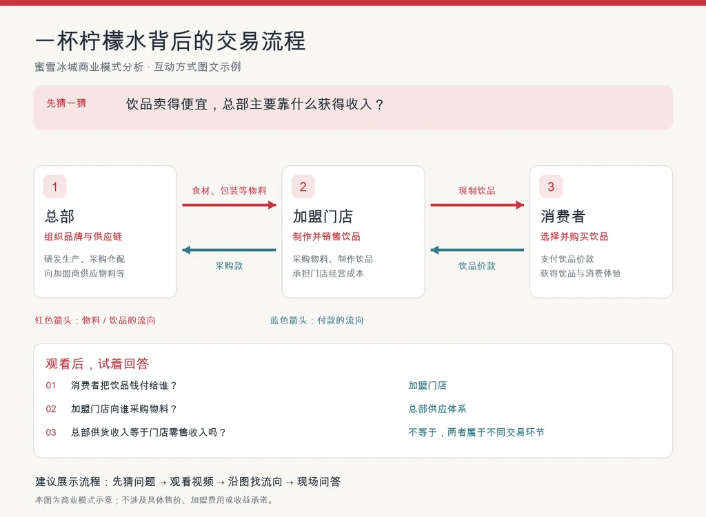

O02 / 运营团队 · 文档展示
蜜雪冰城的商业模式分析

本项目以“饮品卖得便宜，企业如何实现盈利”为切入点，解析蜜雪冰城的商业模式。项目围绕总部、加盟商与消费者三类主体，梳理总部组织供应链、向加盟商供货，再由加盟门店服务消费者的运转关系，区分总部供货收入与门店零售收入。通过研发、生产、采购、仓储和配送等环节，解释供应链效率如何支持低价经营，并分析“雪王”形象与用户传播在品牌认知中的作用。展示将用视频和关系图呈现“低价吸引客流—客流支持加盟网络—采购规模扩大—成本优化支持低价”的循环，同时讨论门店密度、单店收益与扩张之间的平衡，引导观众理解低价背后的经营逻辑及其适用条件。
